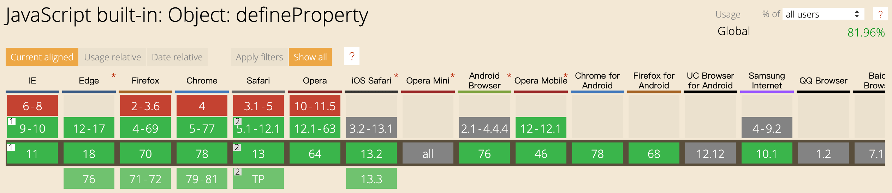

闲来无事看到了一个关于Vue的MVVM的简单讲解，觉得写得不错，做个分享。
文章地址
文章内容我就不贴出，比较简洁明了，我记录一下我的一些思考总结。
PS：建议先仔细读这篇文章。
MVVM
MVVM即双向数据绑定，是一种设计模式，一般是Web前端框架的核心概念，肯定也不是Vue只此一家有。
简单来说就是，数据跟视图的实时绑定。如果我们自己要实现这个需求，那核心的问题有三个：
1、如何监听到数据变化？
2、数据变化如何通知到视图？
3、视图如何更新？
这三个问题先放着，后面大家就知道我为什么这么划分这三个问题。
讨论文章
实现数据绑定的做法有大致如下几种：1、发布者-订阅者模式（backbone.js）2、脏值检查（angular.js）3、数据劫持（vue.js）
那文章中把实现数据绑定归类为这几种，不过我觉得他的说法有问题。
首先，发布订阅模式是一种消息通知的设计模式，它解决的是通知的问题，也就是我上面提到的第2个问题。
然后，无论是脏值检查还是数据劫持，它解决的是监听数据变化的问题，也即是上面第1个问题。
也就是说，实现数据绑定，做法是 2 或 3 + 1，而不是选择其中一个就可以的。
另外，这三个方式并没有视图更新的部分，不能算是一个完整的数据绑定过程。
PS：这一点上大家要明确。
如何监听到数据变化？
angular.js：脏值检查。
vue.js：数据劫持。
angular.js我已许久不用，就不多讨论，这里谈谈vue.js。
不得不说，vue.js是做得比较鸡贼的，它利用js的语言特性，即Object.defineProperty()方法，做到了监听数据变化，但也因此它只能兼容IE9以上浏览器。

框架所使用的语言特性，直接影响它的兼容性。
数据变化如何通知到视图？
如果对设计模式比较了解，一看到这个需求，很自然而然地就想起订阅发布模式。
关于订阅发布模式，可查看：https://www.cnblogs.com/lovesong/p/5272752.html
视图如何更新？
在看那文章中，我最感兴趣的是这个，有些豁然开朗。
在我看来，视图更新数据无非是在元素节点的属性或内容上，那么只需要设置一些特殊的指令作识别，再将相应的数据更新到元素上即可。
这样这一步需要做两件事：
1、指令解析器。解析指令，例如指令类型、对应表达式或数据项。
2、订阅事件。根据数据项生成订阅者。
做到这两步，再加上前面所做，就完成了MV的绑定。这个过程中，数据的维护方是观察者，而指令解析器是订阅者。
可能大家没有意识到的是，如果要完成VM的绑定，那么指令解析器是观察者，而数据的维护方是订阅者。例如一个表单的input，指令解析器解析出v-model时，它就需要监听input的change事件，当数值变化时，它需要通知数据维护方更新数据。
所以，在完整的MVVM中，数据维护方和指令解析器即是观察者，也是订阅者。
总结
MVVM，无论细节是如何实现，其关键部分就在于订阅发布这种思想，把握好这个，理解就不难了。